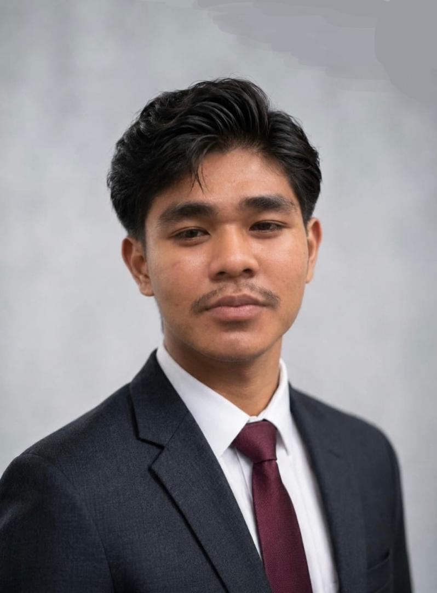
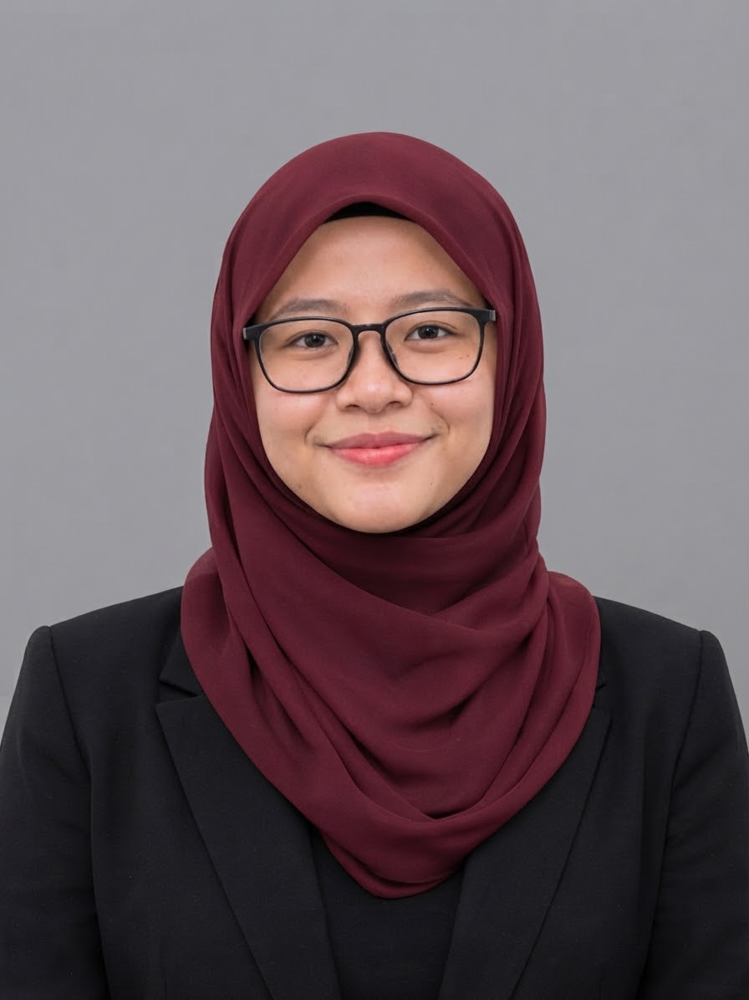

05 / TEAM
Five people.
One road-energy idea.
Meet the team behind PiezoPower Road and the role each member brings to the project.
Meet the team behind PiezoPower Road and the role each member brings to the project.
Each member contributes a defined function across leadership, engineering, research, analysis and project design.

Project leadership, coordination and strategic direction.
Electrical pathway, energy storage and system integration.

Research data, analysis, evidence and supporting statistics.
Prototype, visual design and project presentation materials.
Portfolio design, visual communication and project documentation.
The roles are complementary: leadership keeps the project aligned, research supplies evidence, engineering develops the energy system, and design turns the concept into a clear prototype and portfolio.